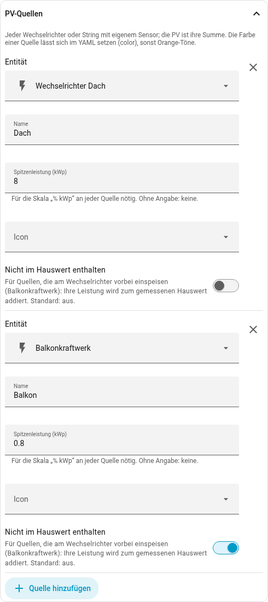
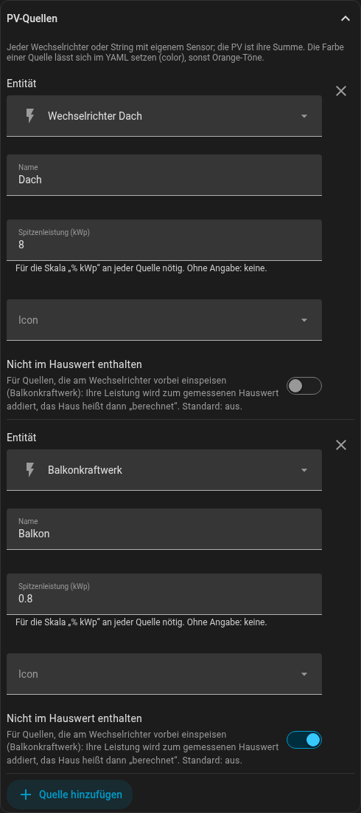
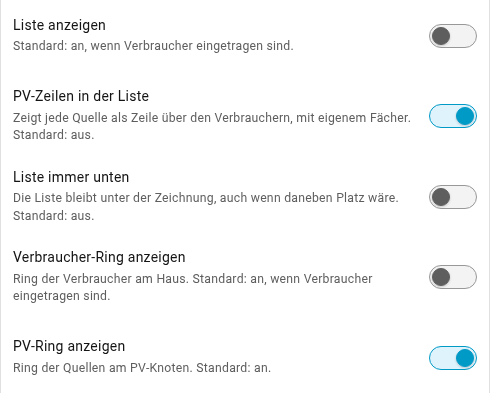
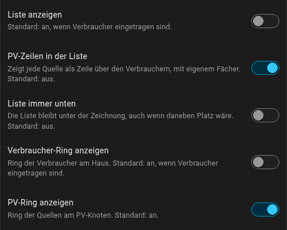

Balkonkraftwerk und weitere PV
Viele Anlagen haben mehr als eine PV-Quelle: die Dachanlage am Hybrid-Wechselrichter und dazu ein Balkonkraftwerk oder weitere Mikro-Wechselrichter. Die Karte nimmt jede Quelle einzeln: Am PV-Knoten steht ihre Summe, der Ring zeigt den Anteil jeder Quelle, und auf Wunsch steht jede als eigene Zeile in der Liste.
Mehrere Quellen eintragen
Im Editor unter Basis-Entitäten bei der PV Mehrere Quellen (je Wechselrichter) wählen. Darunter erscheint der Abschnitt PV-Quellen: je Quelle die Leistungs-Entität, ein Name, die Spitzenleistung in kWp und ein Icon. Mit Quelle hinzufügen kommt die nächste dazu.

Eine Summen-Entität braucht es dafür nicht. Nachts melden sich Mikro-Wechselrichter oft als nicht verfügbar; die Karte zählt eine Quelle, deren letzter Wert nahe null war, still als 0. Fällt eine Quelle dagegen aus, während sie lieferte, steht die Summe in Gelb, und der Tooltip nennt, was fehlt („ohne Balkon“).
Balkonkraftwerk: nicht im Hauswert enthalten
Ein Hybrid-Wechselrichter sieht nur seine eigenen Strings. Ein Balkonkraftwerk, das hinter dem Zähler einspeist, erscheint in seinem Hauswert als weniger Verbrauch, nicht als Erzeugung – der Hauswert ist um genau dessen Leistung zu klein.
Dafür gibt es je Quelle den Schalter Nicht im Hauswert enthalten. Die Karte addiert die Leistung dieser Quelle zum gemessenen Hauswert, und das Haus heißt dann „· berechnet“. Ein Tipp auf das Haus öffnet weiter den Verlauf des gemessenen Sensors.
grid braucht keine Korrektur, solange der Netzsensor am Hausanschluss misst,
wie es ein Smart Meter oder der Stromwandler des Wechselrichters tut. Er sieht
die Einspeisung des Balkonkraftwerks ohnehin.
Ring und Zeilen
Unter Darstellung stehen zwei Schalter für die Quellen: PV-Ring anzeigen (Standard: an) und PV-Zeilen in der Liste (Standard: aus). Die PV-Zeilen stehen über den Verbrauchern, sortieren sich wie diese und haben ihren eigenen Fächer zum PV-Knoten.


Ist bei jeder Quelle die Spitzenleistung eingetragen, bietet die Karte einen weiteren Knopf: 100 % zeigt die Anteile am Ring, % kWp die Leistung im Verhältnis zur gesamten Spitzenleistung – siehe Quick-Buttons.
In YAML
entities:
solar:
- entity: sensor.wechselrichter_dach
name: Dach
kwp: 8
- entity: sensor.balkonkraftwerk
name: Balkon
kwp: 0.8
house: excluded
grid: sensor.netz
house: sensor.hausverbrauch
list:
solar: trueAlle Felder einer Quelle stehen unter Alle Optionen.
Weiterhin möglich: ein Summen-Helfer
Wer die Summe auch anderswo braucht, kann wie bisher einen Helfer anlegen (Gruppe → Sensor-Gruppe, Typ Summe, Nicht-numerisch ignorieren an) und ihn als eine Entität eintragen. Ring-Anteile, PV-Zeilen und die Skala in kWp gibt es dann nicht – die Karte kennt die einzelnen Quellen nicht. Für den Energie-Modus braucht auch die Gruppe die Zustandsklasse „Messung“; sie übernimmt sie von ihren Mitgliedern, wenn alle dieselbe haben (siehe Energie).